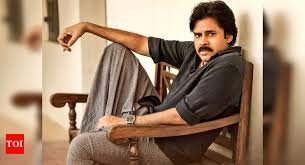

pavan kalyan
Konidela Pawan Kalyan (born Konidela Kalyan Babu; 2 September 1968 or 1971[n 1]) is an Indian actor, politician, filmmaker, martial artist, and philanthropist who works in Telugu cinema. Known for his unique acting style and mannerisms, he has a large fan base and a cult following. One of the highest-paid actors of Indian cinema, he has been featured in Forbes India's Celebrity 100 list since 2013. Kalyan is the recipient of a Filmfare Awards South, a SIIMA Award, a CineMAA Award, and a Santosham Film Award.[5] He is also the founder of the Jana Sena Party. Kalyan made his acting debut in the 1996 film Akkada Ammayi Ikkada Abbayi but rose to prominence with the dramas Gokulamlo Seeta (1997) and Suswagatham (1998). He achieved stardom for his performance in Tholi Prema (1998), which won the National Film Award for Best Feature Film in Telugu that year. Kalyan established himself as a leading actor with successful projects such as Thammudu (1999), Badri (2000), Kushi (2001), Balu (2005), Jalsa (2008), Gabbar Singh (2012), Attarintiki Daredi (2013), Gopala Gopala (2015), Vakeel Saab (2021), and Bheemla Nayak (2022).[6] He received the Filmfare Award for Best Actor Telugu for Gabbar Singh while Attarintiki Daredi held the record of being the highest-grossing Telugu film of all time. In addition to acting, he produces films under the banners Anjana Productions and Pawan Kalyan Creative Works.
Signature